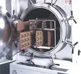

Highly
Accelerated Stress Test (HAST)
The acronym "HAST"
stands for "Highly Accelerated
Temperature/Humidity Stress Test."
It was developed as a shorter alternative to Temperature Humidity Bias
(THB)
Testing. If THB testing takes 1000 hours to complete, HAST results
are available within 96-100 hours. Because of this, the popularity
of HAST has continuously increased in recent years, to the extent that
some companies have totally replaced THB testing with HAST.
Figure 1 shows an example of a HAST system - the Trio Tech 6000X.
Like
THB testing, HAST accelerates corrosion, particularly that of the die
metal lines and thin film resistors. HAST requires
preconditioning
and is conducted with electrical bias
at 130 deg C and 85% RH for 96-100
hours.
|
|
|
Fig. 1.
Example of a HAST system: the Trio Tech 6000X |
Electrical
bias during HAST stressing must be defined based on the following
guidelines: 1)
power
dissipation
must be minimized to ensure that moisture is always present at the die
surface; 2)
alternate
pins must be
subjected to opposite bias (low voltage versus high voltage) as much as
possible; 3)
potential differences between the various metallizations
on the die must be maximized; 4) the operating
voltage range
for the device must also be maximized,
as long as the power dissipation is kept under control.
The
samples for HAST stressing are loaded into
HAST boards
prior to loading into the HAST chamber. HAST boards are designed
to withstand the severe test conditions of HAST and are, therefore,
relatively expensive.
The HAST boards are then inserted into
board
racks
(see
Fig. 2) inside the chamber of the HAST system.
|
 |
|
Fig. 2.
A look inside the chamber of the Trio Tech 6000X |
HAST
is recommended for the
qualification of
any change that can potentially affect the
corrosion resistance
of the product. Thus, a new fab process, a new
package, or a new fab/assembly site definitely requires HAST data. HAST is also recommended for changes
in the die glassivation, metallization or thin film resistors, as well
as changes in the molding compound. It is also used for the
reliability assessment of lots suspected to be prone to corrosion due to
ionic contamination.
One may refer to
JEDEC
JESD22-A110
for more details on this reliability test.
Reliability
Tests:
Autoclave
Test or PCT; Temperature
Cycling; Thermal
Shock;
THB;
HAST;
HTOL;
LTOL;
HTS; Solder
Heat Resistance Test (SHRT);
Other
Reliability Tests
See Also:
Reliability
Engineering;
Reliability Modeling; Qualification
Process; Failure
Analysis;
Package Failures; Die
Failures
HOME
Copyright
©
2001-Present
www.EESemi.com.
All Rights Reserved.